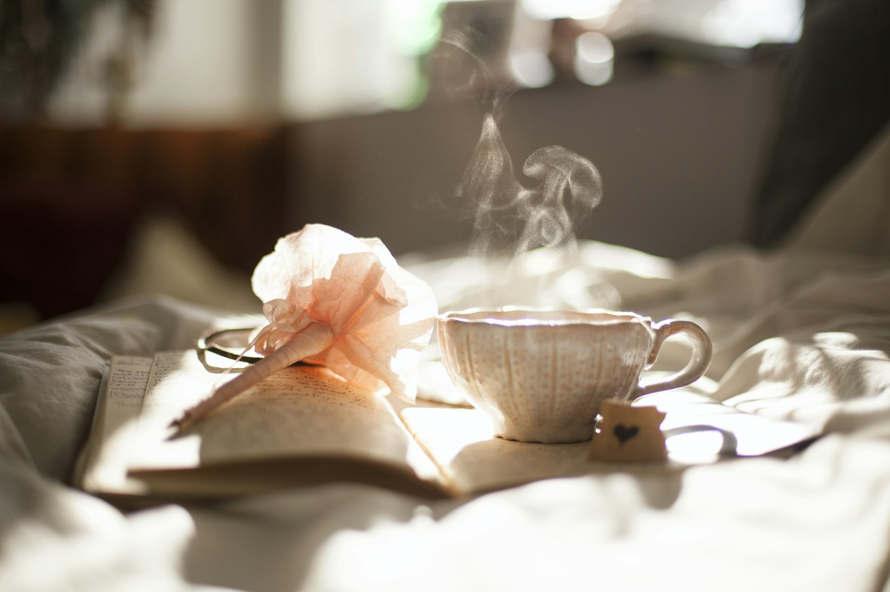
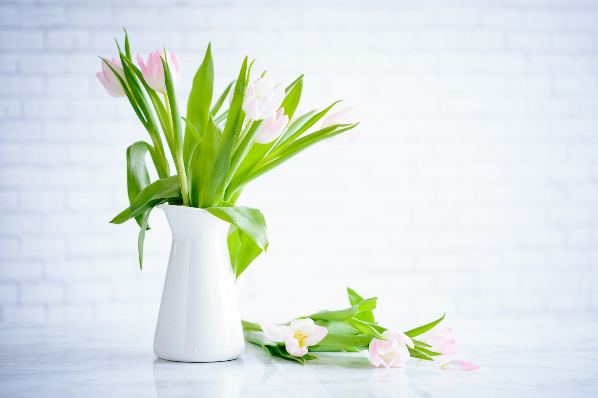
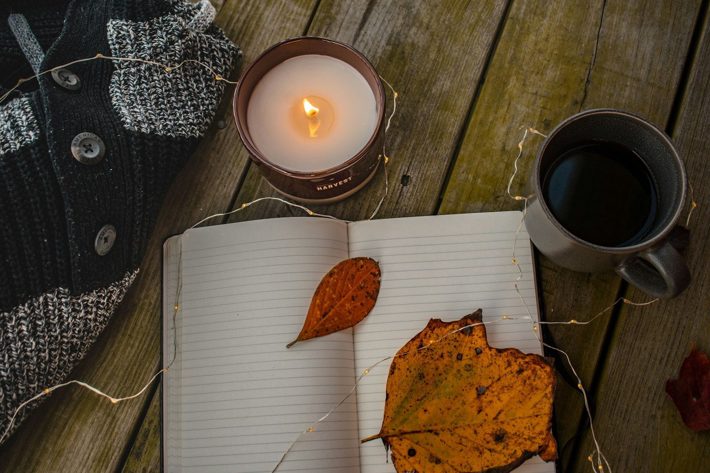

Share your project
A good post has clear photos in natural light, a short story about why you made it, and the materials and steps you used so others can follow along.
Photos
Add up to eight photos. The first one becomes the cover.
Drop photos here
JPG or PNG, up to 12 MB each. Landscape works best.

Cover

Project details
Keep it short and clear. Around 5–8 words reads best on the feed.
This helps us show your post to makers who love the same craft.
A rough total — hours, evenings, or weekends all work.
Choose how someone new to this craft would find the project.
2–4 short paragraphs is plenty. Tell us what you were thinking, not just what you did.
Materials
List the yarns, fabrics, threads, or tools someone would need.
-
 Walnut-dyed worsted wool 1 skein, roughly 110 yards — heathered brown
Walnut-dyed worsted wool 1 skein, roughly 110 yards — heathered brown -
Ochre cotton floss 3 skeins — DMC 729 or similar
-
Unbleached linen, 28-count 10 × 14 inch piece, hemmed on all sides
-
Wooden 8-inch embroidery hoop Beech, with a brass tension screw
-
Tapestry needle, size 24 Plus a size 26 for fine details
-
Water-soluble fabric pen For transferring the design — test on a scrap first
Steps
Walk us through the project in your own order — drag the numbers to reorder.
Posts always appear on your profile. Choose any groups you'd also like to share with.